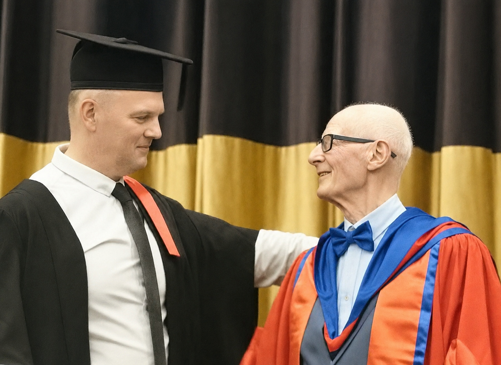

You might be saying…
- I'm afraid this is only going to get worse.
- I don't feel like myself any more.
- I've seen the doctors and specialists, and I'm not any better.
- I can't keep coping with this on my own — I need some help.
A gentle, drug-free therapy for easing the symptoms of Lyme disease, autoimmune conditions, and other chronic health issues — with Kieron Morrissey at The Shasa Clinic in Edermine.

Kieron Morrissey Certified Applied Biomagnetic Therapist
Wherever you are on your journey, it can help to put words on it. Read these gently — and notice which voice you'd rather be speaking.
Less than a decade ago, my health and life were in turmoil. I experienced chronic fatigue, heart palpitations, carditis, dizziness, muscular pain, nausea, anxiety — and a long list of other symptoms.
Being sick, exhausted, or in constant pain is a very worrying experience. I felt abandoned by my doctors and by conventional medicine. I had the tests, saw the specialists, sat in the waiting rooms — hopeful of some help (on my knees at times), hopeful of an explanation. What was happening to me, and why?
It turned out I had Lyme disease, along with a genetic condition called haemochromatosis (iron overload) that I'd been diagnosed with some years earlier. When I eventually overcame the Lyme disease — thanks to Applied Biomagnetic Therapy and its founder, Raymond Cadwell — my symptoms disappeared.
I overcame my illness and regained my health. You can too.
I went on to become a certified Applied Biomagnetic Therapist. I did this to get real answers to my own questions and to learn the truth about health. More than that, I wanted my loved ones to have a fighting chance against the causes of chronic and life-threatening illness — and I wanted the best possible solution, free of side effects.
I feel very privileged to be where I am now. My story could have been a very different one. I'm amazed every day at the remarkable, positive benefits my clients experience — many of whom come to me through referrals from family and friends who have already had outstanding results.
Life is short. Whether we have a long life or a short one on this planet, none of us should have to spend that time suffering or chronically ill. My only wish is that I had found this therapy sooner.
Get in touch to talk through what you're dealing with, ask any questions you have, and book your first session at The Shasa Clinic.